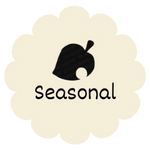

Here at Nook’s Cranny, we strive to balance our products between the constant, and the new. We also provide a mail-order catalog with next-day shipping! So anything you want that we don’t have in stock can be yours within 24 hours. We offer a constant stock of flowers, shrubs, and tree seeds, tools, medicine, and diving equipment. Every day we like to rotate some of our stock to keep it fresh and exciting for you. We change up our wallpaper and flooring options on the daily, and have five new furniture options every day.

We also provide a rotating stock of seasonal items to prep you for the island events. Surfboards in the summer, and seasonal holiday décor for Easter, Halloween, Thanksgiving, and Christmas! So come down to Nook’s Cranny today to see what we have in stock, sell your goods, and feel at home with Timmy and Tommy.